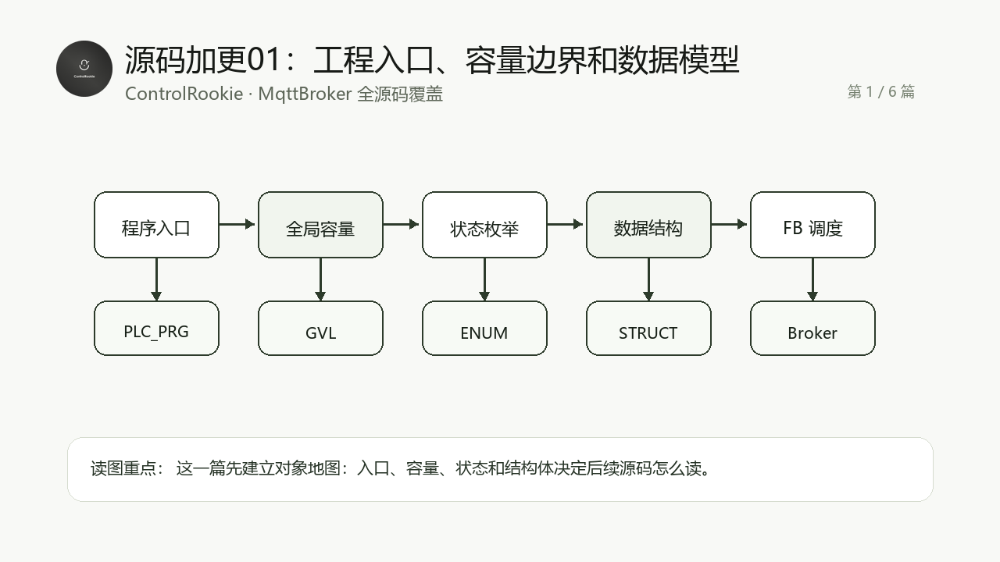

这一组源码加更只有一个目标：把 MqttBroker 的真实 ST 源码按工程阅读顺序讲完整。不是再补几段“看起来像源码”的片段，而是让读者能沿着源码对象理解这个 Broker 怎么组织、怎么运行、怎么排障。
适合谁收藏
- 已经读过 MqttBroker 主线教程，想继续看真实源码实现的工程师。
- 想学习 CodeSys ST 工程如何拆分 Broker、连接池、编解码、路由和 QoS 调度的人。
- 想把 MQTT Broker 移植到 PLC、边缘控制器或教学工程里的开发者。

先给结论
这一篇只解决一个问题：这个 Broker 工程有哪些基础对象，它们分别限制了容量、状态、错误、订阅、Retain、Inflight 和诊断的边界。
读 Broker 源码不能从 TCP 监听或 PUBLISH 转发开始，第一步必须先看工程入口、全局容量和数据结构。否则后面看到连接池、订阅表、Retain 表、QoS 表时，变量都认识，但不知道它们在系统里承担什么角色。
这篇覆盖 22 个源码文件，合计约 600 行 ST 代码。为了保持公开教程可读性，正文先讲源码阅读路径，再给完整源码。读代码时建议不要从第一个代码块一路机械读到底，而是按本篇的“读代码顺序”来抓主线。
从工程问题到代码职责
| 层次 | 本篇重点 | 你读源码时要抓住的判断 |
|---|---|---|
| 工程入口 | 程序如何启动、对象如何被实例化 | 先确认谁是入口，谁只是被调度的对象 |
| 数据边界 | 容量、状态、错误、缓冲区和表结构 | 先知道边界，后面排障才不会乱猜 |
| 协作关系 | 各 FB、函数和结构体如何互相传递数据 | 不按文件夹读，按数据流和状态流读 |
| 验证路径 | 在线观察应该看哪些变量 | 代码最终要能落到现场排障，而不是只停在源码阅读 |
本篇源码覆盖表
| 序号 | 源码对象 | 行数 |
|---|---|---|
| 1 | E_MqttBrokerError.st | 35 |
| 2 | E_MqttBrokerState.st | 19 |
| 3 | E_MqttConnectionState.st | 21 |
| 4 | E_MqttInflightDirection.st | 17 |
| 5 | E_MqttInflightState.st | 23 |
| 6 | E_MqttPacketType.st | 29 |
| 7 | E_MqttQoS.st | 17 |
| 8 | ST_MqttBrokerAclRule.st | 19 |
| 9 | ST_MqttBrokerAuthUser.st | 16 |
| 10 | ST_MqttBrokerConnection.st | 40 |
| 11 | ST_MqttBrokerConnectionSnapshot.st | 55 |
| 12 | ST_MqttBrokerDiagItem.st | 17 |
| 13 | ST_MqttBrokerInflightMessage.st | 24 |
| 14 | ST_MqttBrokerMetrics.st | 38 |
| 15 | ST_MqttBrokerProtocolAck.st | 18 |
| 16 | ST_MqttBrokerPublishFrame.st | 23 |
| 17 | ST_MqttBrokerRetainedMessage.st | 19 |
| 18 | ST_MqttBrokerSubscription.st | 19 |
| 19 | ST_MqttBrokerTopicItem.st | 17 |
| 20 | GVL_MqttBroker.st | 56 |
| 21 | PLC_PRG.st | 59 |
| 22 | PRG_MqttBrokerDemo.st | 19 |
推荐阅读顺序
- 先看
GVL_MqttBroker的容量常量。 - 再看 ENUM，把状态和错误编号建立起来。
- 最后看 STRUCT，理解连接、订阅、Retain、QoS 和诊断数据如何落地。
验证和排障边界
- 如果后续连接数、订阅数或 Retain 数量异常，第一反应先回到这一篇检查容量常量。
- 如果在线变量看不懂，先对照这一篇的数据结构字段，不要直接猜状态机。
本篇完整开源代码
下面代码来自对应 .st 源文件的连续完整内容。为方便公开阅读，只保留源码对象名，不放本机工程路径。
完整代码 01: E_MqttBrokerError.st
iecst
/// =======================================================================
/// 名称 : E_MqttBrokerError
/// 功能 : MQTT Broker 错误码
/// 说明 : 统一描述协议、资源、TCP 和调度类错误，便于现场诊断。
/// 编程人员 : ControlRookie
/// 时间 : 2026-05-08
/// 版本 : V1.0
/// =======================================================================
{attribute 'qualified_only'}
{attribute 'strict'}
TYPE E_MqttBrokerError :
(
uiNoError := 0, // 无错误
uiInvalidState := 100, // 状态机进入未定义状态
uiTcpListenFailed := 200, // TCP 监听启动失败
uiTcpAcceptFailed := 201, // TCP 新连接接入失败
uiTcpReadFailed := 202, // TCP 读取失败
uiTcpWriteFailed := 203, // TCP 写入失败
uiClientSlotsFull := 300, // 客户端槽位已满，无法接受新连接
uiProtocolMalformed := 400, // MQTT 报文格式非法
uiUnsupportedProtocol := 401, // CONNECT 中协议名或协议级别不支持
uiInvalidClientId := 402, // ClientID 非法或超出本 Broker 缓存能力
uiInvalidTopic := 403, // Topic Name 或 Topic Filter 非法
uiUnsupportedQoS := 404, // 首版收到当前不支持的 QoS 业务闭环请求
uiPacketTooLarge := 405, // MQTT 报文超过本 Broker 缓冲区上限
uiDuplicateClientId := 406, // 新连接使用了已在线 ClientID，旧连接按 MQTT 规范被替换
uiSubscriptionFull := 500, // 订阅表已满
uiRetainFull := 501, // Retain 表已满
uiRxInflightFull := 502, // 入站事务表已满
uiTxInflightFull := 503, // 出站事务表已满
uiQueueFull := 504, // 单连接协议队列或投递队列已满
uiKeepAliveTimeout := 600, // 客户端超过 KeepAlive 允许时间未发送任何 MQTT 报文
uiQoS1RetryExceeded := 700 // QoS1 出站事务重试耗尽
) UINT;
END_TYPE完整代码 02: E_MqttBrokerState.st
iecst
/// =======================================================================
/// 名称 : E_MqttBrokerState
/// 功能 : MQTT Broker 顶层运行状态
/// 说明 : 顶层状态只表达 Broker 生命周期，不承载单连接 MQTT 会话细节。
/// 编程人员 : ControlRookie
/// 时间 : 2026-05-08
/// 版本 : V1.0
/// =======================================================================
{attribute 'qualified_only'}
{attribute 'strict'}
TYPE E_MqttBrokerState :
(
iDisabled := 0, // Broker 未使能，所有监听、连接和调度逻辑均停止
iInit := 10, // Broker 正在初始化静态表、诊断计数和监听资源
iListen := 20, // Broker 正在打开 TCP 监听端口并等待监听资源就绪
iRunning := 30, // Broker 正常运行，允许接入客户端并调度 MQTT 报文
iFault := 90 // Broker 顶层出现不可恢复错误，需要外部撤销使能后重新初始化
);
END_TYPE完整代码 03: E_MqttConnectionState.st
iecst
/// =======================================================================
/// 名称 : E_MqttConnectionState
/// 功能 : MQTT Broker 单客户端连接槽位状态
/// 说明 : 每个 TCP 客户端独立维护该状态，避免单个异常连接影响其他槽位。
/// 编程人员 : ControlRookie
/// 时间 : 2026-05-08
/// 版本 : V1.0
/// =======================================================================
{attribute 'qualified_only'}
{attribute 'strict'}
TYPE E_MqttConnectionState :
(
iFree := 0, // 槽位空闲，允许监听层分配给新 TCP 连接
iTcpAccepted := 10, // TCP 连接已接入，但尚未完成 MQTT CONNECT 解析
iWaitConnect := 20, // 正在等待客户端发送 MQTT CONNECT 报文
iConnected := 30, // MQTT 会话已建立，可处理 PUBLISH/SUBSCRIBE/PING 等报文
iDisconnecting := 40, // 正在发送最后的协议响应或释放底层 TCP 资源
iClosed := 50, // 连接已关闭，等待顶层清理订阅、事务和槽位状态
iFault := 90 // 连接槽位出现协议或 TCP 错误，等待统一收口
);
END_TYPE完整代码 04: E_MqttInflightDirection.st
iecst
/// =======================================================================
/// 名称 : E_MqttInflightDirection
/// 功能 : MQTT 在途事务方向
/// 说明 : 明确区分客户端到 Broker 与 Broker 到订阅者，避免 QoS2 扩展时重构事务表。
/// 编程人员 : ControlRookie
/// 时间 : 2026-05-08
/// 版本 : V1.0
/// =======================================================================
{attribute 'qualified_only'}
{attribute 'strict'}
TYPE E_MqttInflightDirection :
(
iNone := 0, // 未使用方向，表示事务槽位空闲
iRx := 1, // 入站事务，客户端发布到 Broker 的 QoS>0 报文
iTx := 2 // 出站事务，Broker 投递给订阅者的 QoS>0 报文
);
END_TYPE完整代码 05: E_MqttInflightState.st
iecst
/// =======================================================================
/// 名称 : E_MqttInflightState
/// 功能 : MQTT 在途事务状态
/// 说明 : 首版使用 QoS1 状态，QoS2 状态作为后续扩展挂点保留。
/// 编程人员 : ControlRookie
/// 时间 : 2026-05-08
/// 版本 : V1.0
/// =======================================================================
{attribute 'qualified_only'}
{attribute 'strict'}
TYPE E_MqttInflightState :
(
iFree := 0, // 事务槽位空闲
iRxPublishSeen := 10, // 已收到客户端 QoS1/QoS2 PUBLISH，等待或已发送协议确认
iTxPublishSent := 20, // 已向订阅者发送 QoS1/QoS2 PUBLISH，等待确认
iWaitPubAck := 30, // QoS1 出站 PUBLISH 正在等待订阅者 PUBACK
iWaitPubRec := 40, // QoS2 出站 PUBLISH 正在等待 PUBREC，首版仅预留
iWaitPubRel := 50, // QoS2 入站 PUBLISH 正在等待 PUBREL，首版仅预留
iWaitPubComp := 60, // QoS2 出站 PUBREL 正在等待 PUBCOMP，首版仅预留
iCompleted := 80, // 事务已完成，等待调度器清理
iFault := 90 // 事务失败，例如重试耗尽或 PacketId 不匹配
);
END_TYPE完整代码 06: E_MqttPacketType.st
iecst
/// =======================================================================
/// 名称 : E_MqttPacketType
/// 功能 : MQTT 控制报文类型枚举
/// 说明 : 枚举值采用 MQTT 固定报头第 1 字节含固定标志后的标准值。
/// 编程人员 : ControlRookie
/// 时间 : 2026-05-08
/// 版本 : V1.0
/// =======================================================================
{attribute 'qualified_only'}
{attribute 'strict'}
TYPE E_MqttPacketType :
(
byReserved := 16#00, // 保留值，Broker 不应接收或发送该控制类型
byConnect := 16#10, // CONNECT 客户端请求建立 MQTT 会话
byConnAck := 16#20, // CONNACK Broker 返回连接确认
byPublish := 16#30, // PUBLISH 发布消息，低 4 位包含 DUP/QoS/Retain 标志
byPubAck := 16#40, // PUBACK QoS1 发布确认
byPubRec := 16#50, // PUBREC QoS2 第一步确认，首版仅预留
byPubRel := 16#62, // PUBREL QoS2 发布释放，首版仅预留
byPubComp := 16#70, // PUBCOMP QoS2 完成确认，首版仅预留
bySubscribe := 16#82, // SUBSCRIBE 订阅请求，固定低位必须为 0010
bySubAck := 16#90, // SUBACK 订阅确认
byUnsubscribe := 16#A2, // UNSUBSCRIBE 取消订阅请求，固定低位必须为 0010
byUnsubAck := 16#B0, // UNSUBACK 取消订阅确认
byPingReq := 16#C0, // PINGREQ 客户端心跳请求
byPingResp := 16#D0, // PINGRESP Broker 心跳响应
byDisconnect := 16#E0 // DISCONNECT 客户端主动断开 MQTT 会话
) BYTE;
END_TYPE完整代码 07: E_MqttQoS.st
iecst
/// =======================================================================
/// 名称 : E_MqttQoS
/// 功能 : MQTT 消息服务质量等级
/// 说明 : 首版实现 QoS0/QoS1，QoS2 枚举保留用于后续四步握手扩展。
/// 编程人员 : ControlRookie
/// 时间 : 2026-05-08
/// 版本 : V1.0
/// =======================================================================
{attribute 'qualified_only'}
{attribute 'strict'}
TYPE E_MqttQoS :
(
byQoS0 := 0, // 最多一次投递，不建立确认事务
byQoS1 := 1, // 至少一次投递，通过 PUBACK 完成确认闭环
byQoS2 := 2 // 只有一次投递，未来通过 PUBREC/PUBREL/PUBCOMP 完成四步握手
) BYTE;
END_TYPE完整代码 08: ST_MqttBrokerAclRule.st
iecst
/// =======================================================================
/// 名称 : ST_MqttBrokerAclRule
/// 功能 : Broker 轻量 Topic 权限规则
/// 说明 : 使用 ClientID 或用户名匹配 Topic 前缀，不引入正则和脚本规则。
/// 编程人员 : ControlRookie
/// 时间 : 2026-05-08
/// 版本 : V1.0
/// =======================================================================
TYPE ST_MqttBrokerAclRule :
STRUCT
xUsed : BOOL; // 当前 ACL 规则是否启用
sClientId : STRING(GVL_MqttBroker.cnMaxClientIdLen); // 限定 ClientID，空字符串表示不按 ClientID 限定
sUsername : STRING(GVL_MqttBroker.cnMaxUsernameLen); // 限定用户名，空字符串表示不按用户名限定
sTopicPrefix : STRING(GVL_MqttBroker.cnMaxTopicLen); // 允许访问的 Topic 前缀
xAllowPublish : BOOL; // TRUE 表示允许匹配对象向该前缀发布
xAllowSubscribe : BOOL; // TRUE 表示允许匹配对象订阅该前缀
xAllowWildcard : BOOL; // TRUE 表示允许订阅过滤器包含 + 或 # 通配符
END_STRUCT
END_TYPE完整代码 09: ST_MqttBrokerAuthUser.st
iecst
/// =======================================================================
/// 名称 : ST_MqttBrokerAuthUser
/// 功能 : Broker 固定用户认证表项
/// 说明 : 第二阶段采用静态小表认证，避免 PLC 侧引入动态数据库和复杂依赖。
/// 编程人员 : ControlRookie
/// 时间 : 2026-05-08
/// 版本 : V1.0
/// =======================================================================
TYPE ST_MqttBrokerAuthUser :
STRUCT
xUsed : BOOL; // 当前用户表项是否启用
sUsername : STRING(GVL_MqttBroker.cnMaxUsernameLen); // MQTT CONNECT 用户名
sPassword : STRING(GVL_MqttBroker.cnMaxPasswordLen); // MQTT CONNECT 密码，当前为明文静态小表
uiMaxSessions : UINT; // 该用户允许同时在线的最大会话数量，0 表示不限制
END_STRUCT
END_TYPE完整代码 10: ST_MqttBrokerConnection.st
iecst
/// =======================================================================
/// 名称 : ST_MqttBrokerConnection
/// 功能 : Broker 单客户端连接槽位数据
/// 说明 : 保存 TCP 句柄、MQTT 会话参数、缓冲区长度、Will 与队列状态。
/// 编程人员 : ControlRookie
/// 时间 : 2026-05-08
/// 版本 : V1.0
/// =======================================================================
TYPE ST_MqttBrokerConnection :
STRUCT
xUsed : BOOL; // 槽位是否已被监听层分配给某个 TCP 客户端
xMqttConnected : BOOL; // 客户端是否已经完成 CONNECT/CONNACK 并进入 MQTT 会话
xCleanSession : BOOL; // CONNECT 中 Clean Session 标志，TRUE 表示断线后清理会话资源
xDisconnectRequested : BOOL; // 连接层请求释放当前槽位的标志
xGracefulDisconnect : BOOL; // 是否收到客户端 DISCONNECT，TRUE 时异常 Will 不触发
eState : E_MqttConnectionState; // 当前连接槽位状态机状态
eLastError : E_MqttBrokerError; // 当前槽位最近一次 Broker 侧错误码
hConnection : NBS.CAA.HANDLE; // NBS TCP 连接句柄，由监听层接入后写入
uiSlot : UINT; // 当前槽位编号，便于诊断和路由回填[1..cnMaxClientSlots]
byProtocolLevel : BYTE; // 当前会话协商到的 MQTT 协议级别，3 表示 3.1，4 表示 3.1.1，5 表示 5.0 基础兼容模式
uiKeepAlive : UINT; // 客户端声明的 KeepAlive 周期[s]
udiLastActivityMs : ULINT; // 最近一次收到该客户端 MQTT 控制报文的系统时间戳[ms]
udiLastTcpActiveMs : ULINT; // 最近一次监听层确认 TCP_Connection 仍处于 Active 的系统时间戳[ms]
udiConnectedAtMs : ULINT; // 当前 MQTT 会话建立完成的系统时间戳[ms]
uiRxLength : UINT; // 接收缓冲区当前已缓存字节数[byte]
uiTxLength : UINT; // 发送缓冲区当前待发送字节数[byte]
uiNextPacketId : UINT; // Broker 向该客户端发送 QoS>0 报文时下一个 Packet Identifier
uiProtocolQueueCount : UINT; // 协议优先队列当前占用数量，例如 PUBACK/SUBACK/PINGRESP
uiDeliveryQueueCount : UINT; // 普通业务投递队列当前占用数量，例如路由后的 PUBLISH
sClientId : STRING(GVL_MqttBroker.cnMaxClientIdLen); // MQTT ClientID，用于会话识别和诊断显示
sUsername : STRING(GVL_MqttBroker.cnMaxUsernameLen); // CONNECT 用户名，基础认证和 ACL 使用
sPassword : STRING(GVL_MqttBroker.cnMaxPasswordLen); // CONNECT 密码，基础认证校验使用，外部诊断不应显示
xAuthenticated : BOOL; // 当前连接是否已经通过 Broker 基础认证
xWillFlag : BOOL; // CONNECT 中是否声明遗嘱消息
xWillRetain : BOOL; // 遗嘱消息是否以 Retain 方式写入 Broker
eWillQoS : E_MqttQoS; // 遗嘱消息 QoS 等级
sWillTopic : STRING(GVL_MqttBroker.cnMaxTopicLen); // 遗嘱消息主题名
sWillPayload : STRING(GVL_MqttBroker.cnMaxPayloadLen); // 遗嘱消息载荷文本
END_STRUCT
END_TYPE完整代码 11: ST_MqttBrokerConnectionSnapshot.st
iecst
/// =======================================================================
/// 名称 : ST_MqttBrokerConnectionSnapshot
/// 功能 : Broker 单连接诊断快照
/// 说明 : 面向 HMI / 在线调试暴露连接槽位关键状态，减少现场排障猜测。
/// 编程人员 : ControlRookie
/// 时间 : 2026-05-08
/// 版本 : V1.0
/// =======================================================================
TYPE ST_MqttBrokerConnectionSnapshot :
STRUCT
xUsed : BOOL; // 当前槽位是否占用
xMqttConnected : BOOL; // 当前槽位是否完成 MQTT 会话建立
xDisconnectRequested : BOOL; // 当前槽位是否已经请求断开和清理
xTcpReadError : BOOL; // 当前槽位 TCP_Read 是否报错
xTcpWriteError : BOOL; // 当前槽位 TCP_Write 是否报错
xWriteBusy : BOOL; // 当前槽位是否正在等待 TCP_Write 完成
xWriteExecute : BOOL; // 当前槽位当前扫描周期是否触发 TCP_Write
xConnectionActive : BOOL; // 当前槽位对应的 NBS TCP_Connection 是否仍处于 Active 状态
xLastTcpReadError : BOOL; // 当前槽位生命周期内是否曾经捕获 TCP_Read 报错
uiSlot : UINT; // 当前槽位编号[1..cnMaxClientSlots]
uiTcpReadErrorCount : UINT; // 当前槽位连续 TCP_Read 错误次数，达到阈值才释放连接
byProtocolLevel : BYTE; // 当前会话实际使用的 MQTT 协议级别，3 表示 3.1，4 表示 3.1.1，5 表示 5.0 基础兼容模式
uiKeepAlive : UINT; // 客户端声明或 Broker 默认的 KeepAlive 周期[s]
udiLastActivityMs : ULINT; // 最近一次收到 MQTT 控制报文的系统时间戳[ms]
udiLastTcpActiveMs : ULINT; // 最近一次监听层确认 TCP_Connection 仍 Active 的系统时间戳[ms]
udiLastBytesRead : UDINT; // 当前槽位最近一次 TCP_Read 读到的字节数[byte]
udiLastNonZeroBytesRead : UDINT; // 当前槽位生命周期内最近一次非零 TCP_Read 字节数[byte]
hConnection : NBS.CAA.HANDLE; // 当前槽位绑定的 TCP 连接句柄，0 表示槽位没有有效连接
uiRxLength : UINT; // 当前槽位接收缓冲区已缓存字节数[byte]
uiTxLength : UINT; // 当前槽位发送缓冲区待发送字节数[byte]
uiLastTxFrameCount : UINT; // 当前槽位最近一次 TCP_Write 实际合并写出的 MQTT 帧数量[帧]
uiLastTxBytes : UINT; // 当前槽位最近一次 TCP_Write 实际写出的总字节数[byte]
udiTxBatchCount : UDINT; // 当前槽位累计启动 TCP 批量写出的次数[次]
udiTxFrameCount : UDINT; // 当前槽位累计写出的 MQTT 帧数量[帧]
uiMaxDeliveryQueueCountSeen : UINT; // 当前槽位生命周期内普通投递队列最高水位[条]
uiMaxProtocolQueueCountSeen : UINT; // 当前槽位生命周期内协议优先队列最高水位[条]
udiTxQueueFullDropped : UDINT; // 当前槽位因队列高水位或队列满而丢弃的 QoS0 投递数量[条]
uiLastFrameLen : UINT; // 当前槽位最近一次识别到的 MQTT 完整帧长度[byte]
byLastPacketType : BYTE; // 当前槽位最近一次处理的 MQTT 控制报文类型高 4 位，例如 16#10 表示 CONNECT
byLastConnectLevel : BYTE; // 当前槽位最近一次 CONNECT 协议级别字节，3 表示 3.1，4 表示 3.1.1，5 表示 5.0 基础兼容模式
xLastConnectParsed : BOOL; // 当前槽位最近一次 CONNECT 是否已经成功解析并进入会话建立流程
uiProtocolQueueCount : UINT; // 协议优先队列占用数量
uiDeliveryQueueCount : UINT; // 普通投递队列占用数量
uiRxInflightCount : UINT; // 当前连接关联的入站 QoS>0 事务数量
uiTxInflightCount : UINT; // 当前连接关联的出站 QoS>0 事务数量
eState : E_MqttConnectionState; // 当前连接状态机状态
eLastError : E_MqttBrokerError; // 当前连接最近错误码
eLastParseError : E_MqttBrokerError; // 当前槽位最近一次 MQTT 报文解析失败原因，uiNoError 表示最近解析未失败
eTcpReadErrorID : NBS.ERROR; // 当前槽位 TCP_Read 原始错误码
eLastTcpReadErrorID : NBS.ERROR; // 当前槽位生命周期内最近一次 TCP_Read 报错原始错误码，避免禁用读 FB 后被清零
eTcpWriteErrorID : NBS.ERROR; // 当前槽位 TCP_Write 原始错误码
sClientId : STRING(GVL_MqttBroker.cnMaxClientIdLen); // 当前连接 ClientID
sUsername : STRING(GVL_MqttBroker.cnMaxUsernameLen); // 当前连接认证用户名
END_STRUCT
END_TYPE完整代码 12: ST_MqttBrokerDiagItem.st
iecst
/// =======================================================================
/// 名称 : ST_MqttBrokerDiagItem
/// 功能 : Broker 诊断历史项
/// 说明 : 用于记录最近错误和关键事件，便于现场通过变量监控定位问题。
/// 编程人员 : ControlRookie
/// 时间 : 2026-05-08
/// 版本 : V1.0
/// =======================================================================
TYPE ST_MqttBrokerDiagItem :
STRUCT
xUsed : BOOL; // 当前诊断条目是否包含有效内容
uiSlot : UINT; // 事件关联的客户端槽位编号，0 表示 Broker 顶层事件
eError : E_MqttBrokerError; // 事件对应错误码，无错误时可用于记录普通状态变化
udiTimeMs : ULINT; // 事件发生的系统时间戳[ms]
sMessage : STRING(255); // 面向工程师的诊断文本
END_STRUCT
END_TYPE完整代码 13: ST_MqttBrokerInflightMessage.st
iecst
/// =======================================================================
/// 名称 : ST_MqttBrokerInflightMessage
/// 功能 : Broker QoS 在途事务表项
/// 说明 : 同一结构用于 RxInflight 与 TxInflight，方向字段明确事务语义。
/// 编程人员 : ControlRookie
/// 时间 : 2026-05-08
/// 版本 : V1.0
/// =======================================================================
TYPE ST_MqttBrokerInflightMessage :
STRUCT
xUsed : BOOL; // 当前事务槽位是否正在使用
xDupOnRetry : BOOL; // 下一次重发时是否需要设置 MQTT DUP 标志
xRouteDone : BOOL; // 入站 QoS2 是否已经执行过一次路由，防止重复报文造成重复投递
uiSlot : UINT; // 事务所属客户端槽位编号[1..cnMaxClientSlots]
uiPacketId : UINT; // MQTT Packet Identifier，同一连接内用于确认匹配
uiRetryCount : UINT; // 当前事务已经重发的次数
eDirection : E_MqttInflightDirection; // 事务方向，区分 RxInflight 与 TxInflight 语义
eState : E_MqttInflightState; // 当前事务推进状态
eQoS : E_MqttQoS; // 当前事务对应的 QoS 等级
udiLastActionMs : ULINT; // 最近一次发送、确认或状态推进的系统时间戳[ms]
udiCreatedAtMs : ULINT; // 事务创建时间戳[ms]
stPublish : ST_MqttBrokerPublishFrame; // 出站重发或入站去重所需的发布帧快照
END_STRUCT
END_TYPE完整代码 14: ST_MqttBrokerMetrics.st
iecst
/// =======================================================================
/// 名称 : ST_MqttBrokerMetrics
/// 功能 : Broker 运行统计信息
/// 说明 : 所有计数器由顶层统一维护，供 HMI、调试器或日志系统读取。
/// 编程人员 : ControlRookie
/// 时间 : 2026-05-08
/// 版本 : V1.0
/// =======================================================================
TYPE ST_MqttBrokerMetrics :
STRUCT
udiAcceptedConnections : UDINT; // 累计接入 TCP 客户端次数
udiRejectedConnections : UDINT; // 因槽位满或错误被拒绝的 TCP 客户端次数
udiCurrentConnections : UDINT; // 当前已占用连接槽位数量
udiMqttSessions : UDINT; // 当前已完成 MQTT CONNECT 的会话数量
udiPublishReceived : UDINT; // Broker 累计收到的 PUBLISH 数量
udiPublishDelivered : UDINT; // Broker 累计成功投递到订阅者队列的 PUBLISH 数量
udiPublishDropped : UDINT; // 因队列满、非法 Topic 或资源不足丢弃的 PUBLISH 数量
udiSubscribeReceived : UDINT; // 累计处理 SUBSCRIBE 请求数量
udiUnsubscribeReceived : UDINT; // 累计处理 UNSUBSCRIBE 请求数量
udiPubAckSent : UDINT; // Broker 向发布者发送 PUBACK 的累计次数
udiPubAckReceived : UDINT; // Broker 收到订阅者 PUBACK 的累计次数
udiPubRecSent : UDINT; // Broker 向发布者发送 PUBREC 的累计次数
udiPubRecReceived : UDINT; // Broker 收到订阅者 PUBREC 的累计次数
udiPubRelSent : UDINT; // Broker 向订阅者发送 PUBREL 的累计次数
udiPubRelReceived : UDINT; // Broker 收到发布者 PUBREL 的累计次数
udiPubCompSent : UDINT; // Broker 向发布者发送 PUBCOMP 的累计次数
udiPubCompReceived : UDINT; // Broker 收到订阅者 PUBCOMP 的累计次数
udiRetainUpdated : UDINT; // Retain 表累计新增或更新次数
udiRetainCleared : UDINT; // Retain 表累计清除次数
udiWillPublished : UDINT; // 因异常断线触发 Will 发布的累计次数
udiQoS1Retries : UDINT; // QoS1 出站消息累计重发次数
udiQoS2Retries : UDINT; // QoS2 出站事务累计重发次数
udiKeepAliveTimeouts : UDINT; // 因 KeepAlive 超时断开客户端的累计次数
udiProtocolErrors : UDINT; // MQTT 协议错误累计次数
udiAuthRejected : UDINT; // 基础认证失败被拒绝的累计次数
udiAclRejected : UDINT; // Topic ACL 拒绝发布或订阅的累计次数
END_STRUCT
END_TYPE完整代码 15: ST_MqttBrokerProtocolAck.st
iecst
/// =======================================================================
/// 名称 : ST_MqttBrokerProtocolAck
/// 功能 : 单连接协议优先响应队列项
/// 说明 : PUBACK、SUBACK、UNSUBACK、PINGRESP 等响应必须优先于普通 PUBLISH 投递。
/// 编程人员 : ControlRookie
/// 时间 : 2026-05-08
/// 版本 : V1.0
/// =======================================================================
TYPE ST_MqttBrokerProtocolAck :
STRUCT
xUsed : BOOL; // 当前协议响应队列项是否有效
ePacketType : E_MqttPacketType; // 需要发送的 MQTT 协议响应类型
uiPacketId : UINT; // 响应关联的 Packet Identifier，无 PacketId 的响应为 0
byReturnCode : BYTE; // CONNACK/SUBACK 等响应返回码，普通确认包为 0
uiReturnCount : UINT; // SUBACK 多 Topic 返回码数量，普通响应为 0 或 1
aReturnCodes : ARRAY[1..GVL_MqttBroker.cnMaxTopicItemsPerPacket] OF BYTE; // SUBACK 多 Topic 返回码数组
END_STRUCT
END_TYPE完整代码 16: ST_MqttBrokerPublishFrame.st
iecst
/// =======================================================================
/// 名称 : ST_MqttBrokerPublishFrame
/// 功能 : Broker 内部标准发布消息帧
/// 说明 : 编解码、路由、事务调度之间统一传递该结构，避免各层重复解析报文。
/// 编程人员 : ControlRookie
/// 时间 : 2026-05-08
/// 版本 : V1.0
/// =======================================================================
TYPE ST_MqttBrokerPublishFrame :
STRUCT
xValid : BOOL; // 当前发布帧是否包含一条可路由的有效 MQTT PUBLISH
uiSourceSlot : UINT; // 发布来源客户端槽位编号，Broker 内部数组索引[1..cnMaxClientSlots]
uiTargetSlot : UINT; // 投递目标客户端槽位编号，路由生成后填写[1..cnMaxClientSlots]
uiPacketId : UINT; // MQTT Packet Identifier，QoS0 为 0，QoS1/QoS2 必须大于 0
eQoS : E_MqttQoS; // 当前消息实际采用的 QoS 等级
xDup : BOOL; // MQTT DUP 标志，TRUE 表示该消息为重发报文
xRetain : BOOL; // MQTT Retain 标志，TRUE 表示 Broker 应更新或投递保留消息
uiTopicLen : UINT; // Topic Name 有效长度[byte]
uiPayloadLen : UINT; // Payload 有效长度[byte]
sTopic : STRING(GVL_MqttBroker.cnMaxTopicLen); // MQTT Topic Name，PUBLISH 只能是主题名，不能含通配符
sPayload : STRING(GVL_MqttBroker.cnMaxPayloadLen); // 载荷文本缓存；首版按文本/字节兼容方式保存
END_STRUCT
END_TYPE完整代码 17: ST_MqttBrokerRetainedMessage.st
iecst
/// =======================================================================
/// 名称 : ST_MqttBrokerRetainedMessage
/// 功能 : Broker Retain 保留消息表项
/// 说明 : 按 Topic Name 保存最近一条保留消息，新订阅命中后补发。
/// 编程人员 : ControlRookie
/// 时间 : 2026-05-08
/// 版本 : V1.0
/// =======================================================================
TYPE ST_MqttBrokerRetainedMessage :
STRUCT
xUsed : BOOL; // 当前 Retain 表项是否有效
eQoS : E_MqttQoS; // Retain 消息保存时的 QoS 等级
uiTopicLen : UINT; // Topic Name 有效长度[byte]
uiPayloadLen : UINT; // Payload 有效长度[byte]
udiUpdatedAtMs : ULINT; // 最近一次更新该 Retain 表项的系统时间戳[ms]
sTopic : STRING(GVL_MqttBroker.cnMaxTopicLen); // Retain 消息主题名，不允许包含通配符
sPayload : STRING(GVL_MqttBroker.cnMaxPayloadLen); // Retain 消息载荷文本；空载荷表示应清除表项
END_STRUCT
END_TYPE完整代码 18: ST_MqttBrokerSubscription.st
iecst
/// =======================================================================
/// 名称 : ST_MqttBrokerSubscription
/// 功能 : Broker 全局订阅表项
/// 说明 : 订阅与连接槽位解耦保存，路由层按 Topic Filter 扫描匹配。
/// 编程人员 : ControlRookie
/// 时间 : 2026-05-08
/// 版本 : V1.0
/// =======================================================================
TYPE ST_MqttBrokerSubscription :
STRUCT
xUsed : BOOL; // 当前订阅表项是否有效
xActive : BOOL; // 所属连接是否在线并允许接收投递
uiSlot : UINT; // 订阅所属客户端槽位编号[1..cnMaxClientSlots]
eMaxQoS : E_MqttQoS; // 订阅者愿意接收的最高 QoS 等级
uiFilterLen : UINT; // Topic Filter 有效长度[byte]
sClientId : STRING(GVL_MqttBroker.cnMaxClientIdLen); // 订阅创建时的 ClientID 快照，便于诊断
sTopicFilter : STRING(GVL_MqttBroker.cnMaxTopicLen); // MQTT Topic Filter，可包含 + 或 # 通配符
END_STRUCT
END_TYPE完整代码 19: ST_MqttBrokerTopicItem.st
iecst
/// =======================================================================
/// 名称 : ST_MqttBrokerTopicItem
/// 功能 : SUBSCRIBE / UNSUBSCRIBE 单个主题条目
/// 说明 : 用于第二阶段多 Topic 报文解析，每个条目独立保存过滤器和返回码。
/// 编程人员 : ControlRookie
/// 时间 : 2026-05-08
/// 版本 : V1.0
/// =======================================================================
TYPE ST_MqttBrokerTopicItem :
STRUCT
xUsed : BOOL; // 当前主题条目是否有效
sTopicFilter : STRING(GVL_MqttBroker.cnMaxTopicLen); // MQTT Topic Filter，可包含 + 或 # 通配符
uiFilterLen : UINT; // Topic Filter 有效长度[byte]
eQoS : E_MqttQoS; // SUBSCRIBE 请求的最大 QoS，UNSUBSCRIBE 时保持 QoS0
byReturnCode : BYTE; // SUBACK 返回码，成功为 QoS 数值，失败为 16#80
END_STRUCT
END_TYPE完整代码 20: GVL_MqttBroker.st
iecst
/// =======================================================================
/// 名称 : GVL_MqttBroker
/// 功能 : MQTT Broker 全局常量
/// 说明 : 所有容量、协议默认值和超时策略集中定义，便于 PLC 项目按资源统一裁剪。
/// 编程人员 : ControlRookie
/// 时间 : 2026-05-08
/// 版本 : V1.0
/// =======================================================================
{attribute 'qualified_only'}
VAR_GLOBAL CONSTANT
cnDefaultPort : UINT := 1883; // Broker 默认 MQTT TCP 监听端口号
cnMaxClientSlots : UINT := 8; // PLC 侧 Broker 同时允许保持的最大客户端槽位数量
cnMaxSubscriptions : UINT := 64; // 全局订阅表最大条目数，所有客户端共享
cnMaxRetainedMessages : UINT := 32; // Retain 保留消息表最大条目数
cnMaxRxInflight : UINT := 16; // 入站 QoS>0 事务表容量，为未来 QoS2 接收去重预留
cnMaxTxInflight : UINT := 32; // 出站 QoS>0 事务表容量，为 QoS1 重发和未来 QoS2 投递预留
cnMaxTopicLen : UINT := 256; // MQTT Topic Name / Topic Filter 最大长度[byte]
cnMaxClientIdLen : UINT := 128; // MQTT ClientID 最大缓存长度[byte]
cnMaxUsernameLen : UINT := 64; // MQTT 用户名最大缓存长度[byte]
cnMaxPasswordLen : UINT := 64; // MQTT 密码最大缓存长度[byte]
cnMaxPayloadLen : UINT := 1024; // 单条消息载荷最大缓存长度[byte]
cnRxBufferSize : UINT := 2048; // 单连接 TCP 接收缓冲区容量[byte]
cnTxBufferSize : UINT := 2048; // 单连接 TCP 发送缓冲区容量[byte]
cnMaxTopicItemsPerPacket : UINT := 8; // 单个 SUBSCRIBE / UNSUBSCRIBE 报文最多解析的主题条目数
cnMaxAuthUsers : UINT := 8; // 固定用户表最大条目数，用于轻量基础认证
cnMaxAclRules : UINT := 16; // 固定 Topic 权限表最大条目数，用于轻量 ACL
cnProtocolQueueSize : UINT := 8; // 单连接协议优先队列容量，PUBACK/SUBACK/PINGRESP 等优先使用
cnDeliveryQueueSize : UINT := 16; // 单连接普通投递队列容量，PUBLISH 业务消息使用
cnDeliveryQueueHighWater : UINT := 12; // 单连接普通投递队列高水位，超过后进入慢客户端保护
cnMaxTxFramesPerWrite : UINT := 8; // 单次 TCP_Write 最多合并写出的 MQTT 控制报文帧数量；现场实测常见为 1~2 帧，保留 8 作为上限但不主动堆大突发[帧]
cnMinTxBufferFree : UINT := 64; // 批量编码时保留的发送缓冲安全余量，避免最后一帧贴边写入[byte]
cnDiagHistorySize : UINT := 32; // 诊断环形历史最大条目数
cnDefaultKeepAlive : UINT := 60; // 客户端未声明时采用的默认 KeepAlive 周期[s]
cnKeepAliveGracePercent : UINT := 150; // MQTT 3.1.1 推荐保活宽限比例，150 表示 1.5 倍
cnWriteTimeout : TIME := T#2S; // 单次 TCP 写操作最长等待时间
cnReadIdleTimeout : TIME := T#50MS; // 单周期读空闲保护时间，用于避免读路径长时间占用扫描周期
cnConnectFirstReadDelayMs : UDINT := 20; // 新 TCP 连接入槽后等待首包到达的短保护窗口；读错误已有连续计数保护，不再用长延迟拖慢 CONNECT[ms]
cnConnectionInactiveGraceMs : UDINT := 3000; // NBS TCP_Connection.xActive 短暂掉 FALSE 的容忍窗口，超过才释放 MQTT 会话[ms]
cnTcpReadMaxConsecutiveError : UINT := 3; // TCP_Read 连续错误达到该次数才释放连接，过滤接入瞬间的短暂读错误
cnQoS1RetryInterval : TIME := T#2S; // QoS1 出站 PUBLISH 等待 PUBACK 的重发周期
cnQoS1RetryIntervalMs : UDINT := 2000; // QoS1 出站 PUBLISH 等待 PUBACK 的重发周期[ms]
cnQoS1MaxRetry : UINT := 3; // QoS1 出站 PUBLISH 最大重发次数
cnQoS2RetryInterval : TIME := T#2S; // QoS2 出站 PUBLISH/PUBREL 等待确认的重发周期
cnQoS2RetryIntervalMs : UDINT := 2000; // QoS2 出站 PUBLISH/PUBREL 等待确认的重发周期[ms]
cnQoS2MaxRetry : UINT := 3; // QoS2 出站事务最大重发次数
cnMaxRouteFanoutPerScan : UINT := 8; // 单扫描周期最多生成的路由投递数量，防止一次发布占满 PLC 周期
cnMaxRetainReplayPerScan : UINT := 32; // 单扫描周期最多补发的 Retain 消息数量，默认等于 Retain 表容量以保持完整补发
cnMaxFramesPerConnectionScan : UINT := 8; // 单连接每扫描周期最多处理的 MQTT 入站报文数量；现场高频互发测试从 4 提到 8 后实时性明显改善[帧]
cnMaxConnectionsPerScan : UINT := 8; // Broker 每扫描周期最多调度的连接槽位数量
cnMaxRetryPerScan : UINT := 4; // Broker 每扫描周期最多处理的 QoS 重发事务数量
cnMqttProtocolLevel31 : BYTE := 3; // MQTT 3.1 CONNECT 可变头协议级别，协议名为 MQIsdp，部分旧客户端仍会使用
cnMqttProtocolLevel311 : BYTE := 4; // MQTT 3.1.1 CONNECT 可变头协议级别
cnMqttProtocolLevel5 : BYTE := 5; // MQTT 5.0 CONNECT 可变头协议级别，本库当前仅做基础兼容接入和零属性响应
cnMqttRemainingLengthMax : UDINT := 268435455; // MQTT Remaining Length 协议允许最大值[byte]
cnQoS2ReservedWindow : UINT := 8; // 未来 QoS2 去重窗口预留容量，首版不启用业务闭环
END_VAR完整代码 21: PLC_PRG.st
iecst
/// =======================================================================
/// 名称 : PLC_PRG
/// 功能 : MQTT Broker 应用任务入口
/// 说明 : MainTask 周期调用本程序，程序内部只保留 Broker 主实例和在线诊断变量。
/// 编程人员 : ControlRookie
/// 时间 : 2026-05-08
/// 版本 : V1.0
/// =======================================================================
PROGRAM PLC_PRG
VAR
fbBroker : FB_MqttBroker; // MQTT Broker 主功能块实例，负责 TCP 监听、客户端接入、主题路由和 QoS 事务调度
bBrokerEnable : BOOL := TRUE; // Broker 总使能，TRUE 时启动监听并服务客户端，FALSE 时停止监听并释放运行态
sBindIP : STRING := '0.0.0.0'; // TCP 监听绑定地址，0.0.0.0 表示监听 PLC 所有可用网卡
uiBrokerPort : UINT := GVL_MqttBroker.cnDefaultPort; // MQTT Broker 监听端口，默认 1883
eBrokerState : E_MqttBrokerState; // Broker 当前顶层状态，便于在线监控运行阶段
xBrokerRunning : BOOL; // Broker 是否已经进入运行调度状态
xBrokerError : BOOL; // Broker 当前扫描周期是否存在监听、接入或资源类错误
eBrokerError : E_MqttBrokerError; // Broker 当前错误码，xBrokerError 为 FALSE 时应为 uiNoError
sBrokerDiag : STRING(255); // Broker 当前诊断文本
hListenHandle : NBS.CAA.HANDLE; // 在线调试观察：非 0 表示 TCP 监听句柄已建立
hLastAcceptHandle : NBS.CAA.HANDLE; // 在线调试观察：最近一次接入的新连接句柄
xTcpServerError : BOOL; // 在线调试观察：TCP_Server 是否报错
xTcpAcceptActive : BOOL; // 在线调试观察：TCP_Connection 是否检测到连接
xTcpAcceptError : BOOL; // 在线调试观察：TCP_Connection 是否报错
eTcpServerErrorID : NBS.ERROR; // 在线调试观察：TCP_Server 原始错误码
eTcpAcceptErrorID : NBS.ERROR; // 在线调试观察：TCP_Connection 原始错误码
uiAcceptFreeSlot : UINT; // 在线调试观察：最近一次接入扫描发现的空闲槽位，0 表示槽位已满
uiActiveSlotCount : UINT; // 在线调试观察：最近一次接入扫描统计到的活动槽位数量[个]
xLastCleanupValid : BOOL; // 在线调试观察：Broker 是否已经锁存过最近一次槽位清理前状态
uiLastCleanupSlot : UINT; // 在线调试观察：最近一次被清理的连接槽位编号[1..cnMaxClientSlots]
udiLastCleanupMs : ULINT; // 在线调试观察：最近一次连接槽位被清理的系统时间戳[ms]
stLastCleanupSnapshot : ST_MqttBrokerConnectionSnapshot; // 在线调试观察：最近一次连接槽位释放前的完整状态快照
uiDiagHistoryCount : UINT; // 在线调试观察：当前诊断环形历史中已经写入的有效条目数量[条]
END_VAR
// === IMPLEMENTATION ===
fbBroker(
bEnable := bBrokerEnable,
sBindIP := sBindIP,
uiPort := uiBrokerPort,
eState => eBrokerState,
xRunning => xBrokerRunning,
xError => xBrokerError,
eLastError => eBrokerError,
sDiagMsg => sBrokerDiag,
hListenHandle => hListenHandle,
hLastAcceptHandle => hLastAcceptHandle,
xTcpServerError => xTcpServerError,
xTcpAcceptActive => xTcpAcceptActive,
xTcpAcceptError => xTcpAcceptError,
eTcpServerErrorID => eTcpServerErrorID,
eTcpAcceptErrorID => eTcpAcceptErrorID,
uiAcceptFreeSlot => uiAcceptFreeSlot,
uiActiveSlotCount => uiActiveSlotCount,
xLastCleanupValid => xLastCleanupValid,
uiLastCleanupSlot => uiLastCleanupSlot,
udiLastCleanupMs => udiLastCleanupMs,
stLastCleanupSnapshot => stLastCleanupSnapshot,
uiDiagHistoryCount => uiDiagHistoryCount);完整代码 22: PRG_MqttBrokerDemo.st
iecst
/// =======================================================================
/// 名称 : PRG_MqttBrokerDemo
/// 功能 : MQTT Broker 最小运行示例
/// 说明 : 在 PLC 应用任务中周期调用本程序即可启动轻量 Broker。
/// 编程人员 : ControlRookie
/// 时间 : 2026-05-08
/// 版本 : V1.0
/// =======================================================================
PROGRAM PRG_MqttBrokerDemo
VAR
fbBroker : FB_MqttBroker; // MQTT Broker 主功能块实例，负责监听、接入、路由和事务调度
bEnable : BOOL := TRUE; // 示例总使能，TRUE 时启动 Broker，FALSE 时停机释放运行态
END_VAR
// === IMPLEMENTATION ===
fbBroker(
bEnable := bEnable,
sBindIP := '0.0.0.0',
uiPort := GVL_MqttBroker.cnDefaultPort);这一篇你最该记住的几句话
- Broker 源码不要按“文件夹顺序”读，要按“入口、状态、数据、报文、路由、事务”读。
- CodeSys ST 工程最容易失控的不是语法，而是对象职责边界混乱。
- 只要你能把本篇源码对象和在线变量对应起来，后续排查连接、订阅、发布和 QoS 问题就不会乱。
系列导航
- 第 1 篇：源码加更01_Broker 工程入口、容量边界和数据模型
- 第 2 篇：源码加更02_FB_MqttBroker 顶层调度、连接池和权限边界
- 第 3 篇：源码加更03_单连接槽位、TCP 字节流和发送队列
- 第 4 篇：源码加更04_MQTT 编解码器和字节工具函数
- 第 5 篇：源码加更05_订阅表、Retain、PUBLISH 路由和业务事件
- 第 6 篇：源码加更06_QoS 事务调度、重试和生产级闭环
评论区预留
这里先保留评论和回复结构，不接入第三方服务。后续统一决定登录、匿名、审核、反垃圾和静态站兼容策略。